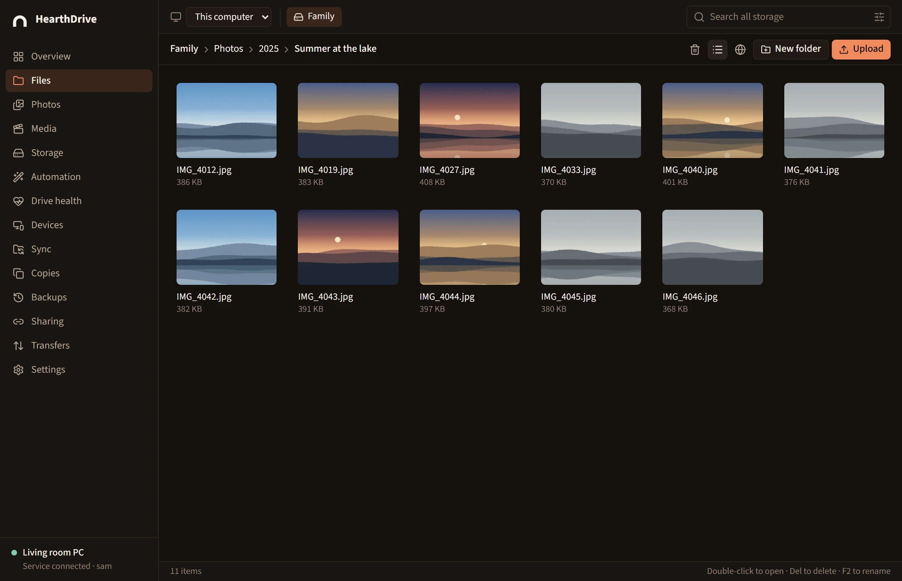
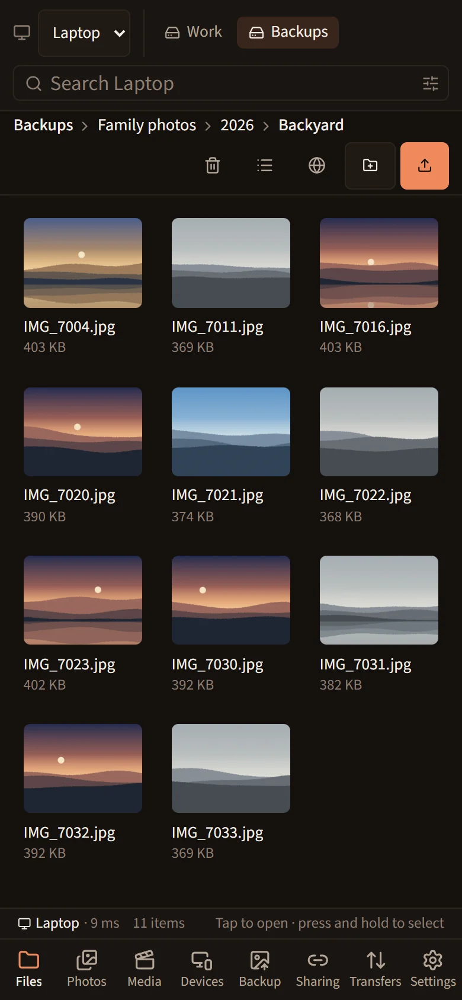
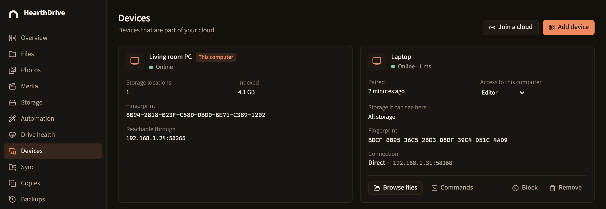
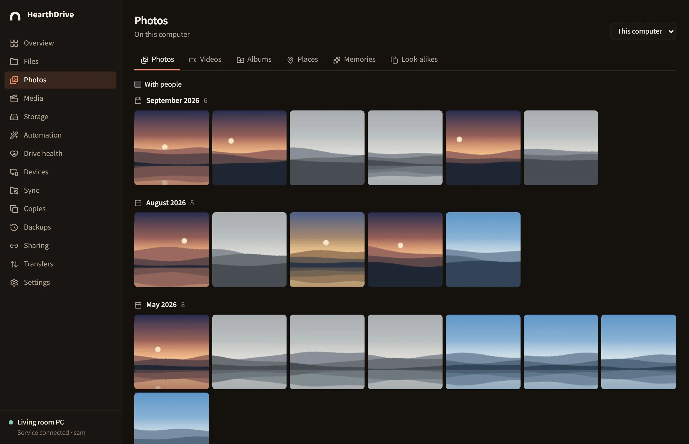

Your files, at home.
HearthDrive turns the Windows computers you already own into one private cloud. From your phone or any of your other computers you can open, search and copy the files on all of them, at home or away.
The files stay on your own drives. There is no HearthDrive account, and no company in between holding a copy.


What it does
Install it on each computer that holds files you care about. Every one of them becomes part of the same cloud, and your phone can reach all of them.
- Files stay where they are
- Add a folder or a whole drive. HearthDrive lists what is in it without moving anything, and keeps that list up to date as you work.
- Every device in one place
- Browse and search the files on all your computers from any of them. Photos and videos open in the app, music and films stream, and anything else downloads.
- Pair with a code, not an account
- A new device joins by scanning a QR code or opening a link. Both screens show a short fingerprint; when they match, you approve it.
- Encrypted from end to end
- Devices connect directly when they can: on your home network, or through your router. When they can’t, traffic goes through a relay that passes it along without being able to read it.
- Copies and sync
- Keep a copy of a folder on a second computer, or keep two folders the same in both directions. Older versions of changed files are kept, and copies pick up where they stopped after a dropped connection.
- Phone backup
- The Android app backs up the photos and videos you take to a computer you choose. Files you share from any app’s Share menu can go to a computer too.
- In File Explorer
- On Windows, each of your devices shows up under HearthDrive in File Explorer. A file downloads when you open it.
- Updates itself
- Every device checks for new versions and accepts only ones signed for HearthDrive. Computers update once their window is closed; phones ask first.
See which devices are home
The Devices page shows each computer and phone you have paired, whether it is reachable right now, and how it is connected. You can block a lost phone from here, or wake a sleeping computer on the same network if its network card allows it.


Setting up
- Install it on the computer that holds your files. Give the computer a name, create your account, and pick the folders or drives to include.
- Install it on your other computers, and the Android app on your phone.
- On the first computer, open Devices and choose Add device. Scan the QR code with your phone, or paste the link on the other computer.
- Check that the fingerprint is the same on both screens, then approve. The new device can now see your files.
Good to know before you install
- A computer has to be on for its files to be reachable. A phone keeps nothing of its own; it opens the files on your computers.
- There are apps for Windows and Android only. There is no Mac, Linux or iPhone version.
- The Windows installer is not code-signed yet, so the first time you run it Windows SmartScreen warns you. Choose More info, then Run anyway.
- The Android app is not in the Play Store. Download the APK on your phone and let your browser install it when Android asks.
- HearthDrive is at version 0.1. Keep a separate backup of anything you could not bear to lose.
Download
The latest version is on the releases page.
-
Download installer
Windows
Windows 10 or 11, 64-bit. Installs for your user only; no administrator needed.
HearthDrive_x64-setup.exe -
Download APK
Android
Phones with a 64-bit ARM processor, which is most phones from the last several years.
HearthDrive_arm64.apk
Already have it? You don’t need to download updates: your devices find them by themselves. Coming from NEXUS Cloud 0.1.4 or older, install this once by hand on one computer and it passes the update on to the rest.